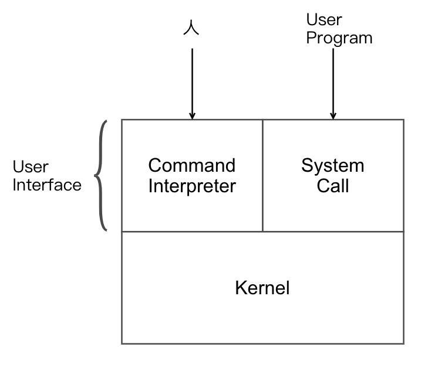
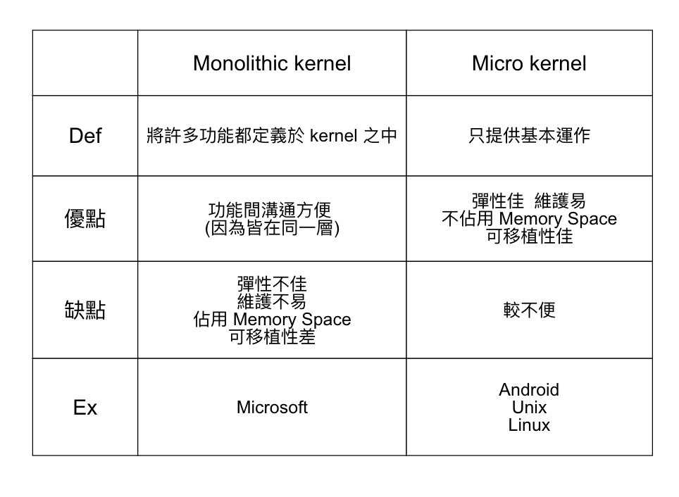

Chapter3-作業系統-作業系統結構
3.3 作業系統結構

Command Interpreter 命令直譯器
- Def: 接收 user 輸入命令, 加以判別：
- 正確 => 呼叫對應的 "Command procedure"
- 不正確 => Output error
- 分為:
- Intergrated part of O.S. => command procedure 整合到 O.S. 之中
優點：速度快 (因為所有 command procedure 已於 O.S., 故在 Monitor Area (Memory) 之中)
缺點：可擴充性低 (彈性差) - Isolated part of O.S. => 將 command procedure 獨立於 O.S. 之外
優點：可擴充性佳 (彈性好)
缺點：速度較慢 (因為可能需做 I/O <-> Memory 的傳輸)
System Call 系統呼叫
Def: 作為 user program 與 O.S. 溝通的介面
- 類似 function 或 subroutine, 但為系統所擁有
Kernel 核心程式
- 負責多個 process 運作上的協調, 管理等
- 負責底層 Hardware 資源的分配及管理
分為：巨核心 和 微核心 
Virtual Machine 虛擬機器
- Def: 藉由模擬技術, 創造一份與底層硬體完全一致的 copy (複製), 以達 Virtual Machine 之效
- 可利用資源共享的技術產生許多 Virtual Machine:
- CPU Scheduling => 共享 CPU
- 用 "Virtual Memory" => 共享 Memory Space
- 用 Spooling => 共用 I/O Device
- Virtual Machine 種類：
- type 1: 原生型 Virtual Machine => 概念同上, 各 Virtual Machine 直接面對底層的硬體
優點：Virtual Machine 可直接跟 Hardware 溝通 => 效率佳
缺點：Virtual Machine 間缺乏統一管理的機制, 故較不便
圖：
- type2: 寄生型 Virtual Machine => 各 Virtual Machine 會由一 O.S. 統一管理
優點：具統一管理各 Virtual Machine 機制, 所以較方便
缺點：Virtual Machine 須經中介者, 方可跟 hardware 溝通, 所以效率較差
圖：
- type 1: 原生型 Virtual Machine => 概念同上, 各 Virtual Machine 直接面對底層的硬體
- Note: 在 Cloud 的 Iaas 之下, 資源的 "Virtualization" 大為盛行, 一般會採用 Virtual Machine 的技術, 使得資源利用率發揮最大效益
Bootstrap Loader 靴帶載入程式 (BIOS - Basic Input Output System)
Def: 為一小程式, 於開機時執行, 一般放於 ROM 中 (space 小), 執行過程會帶出 O.S. Kernel 所在, 以便後續開機做來可順利運行